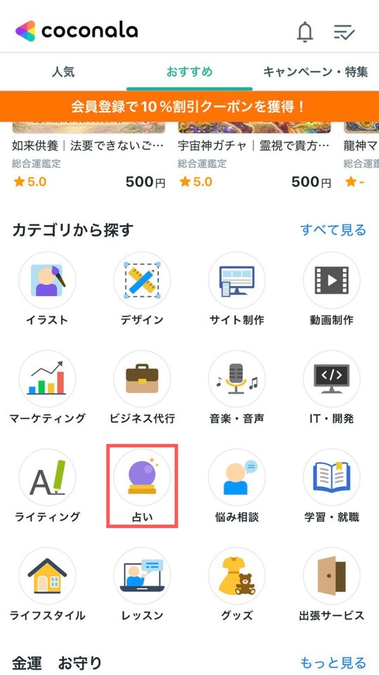
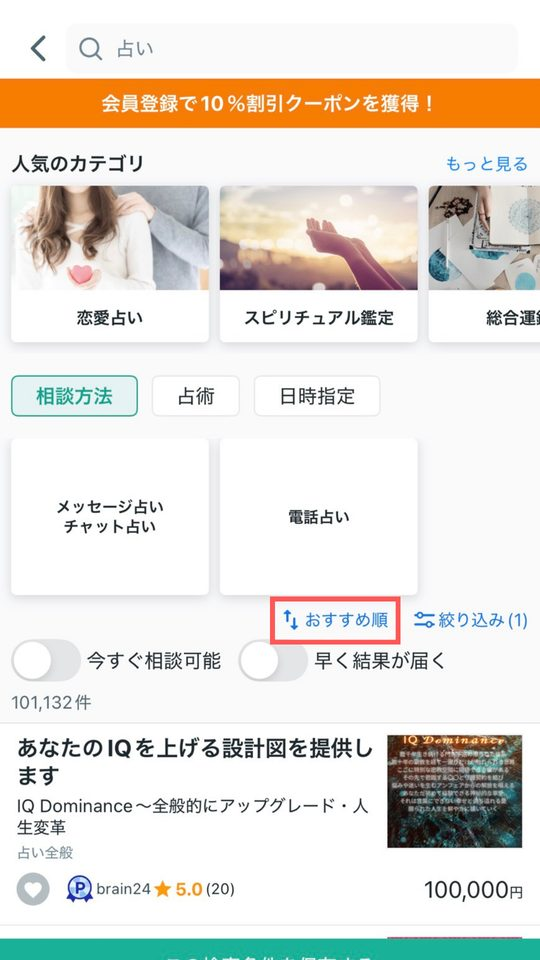
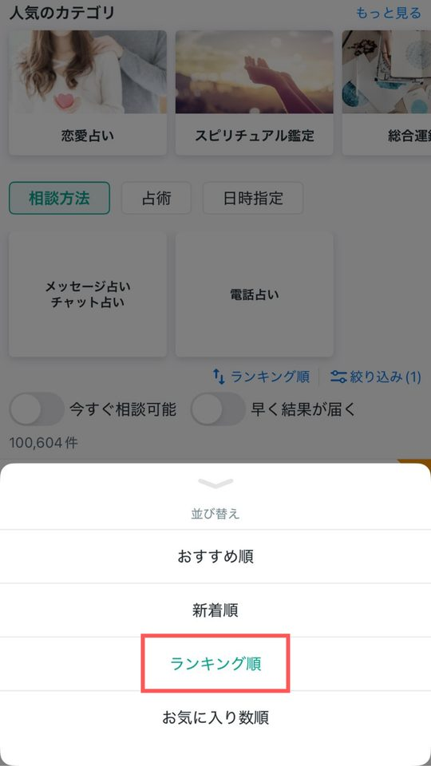
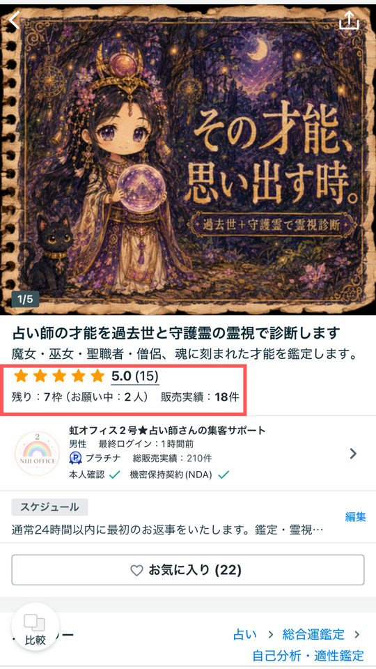
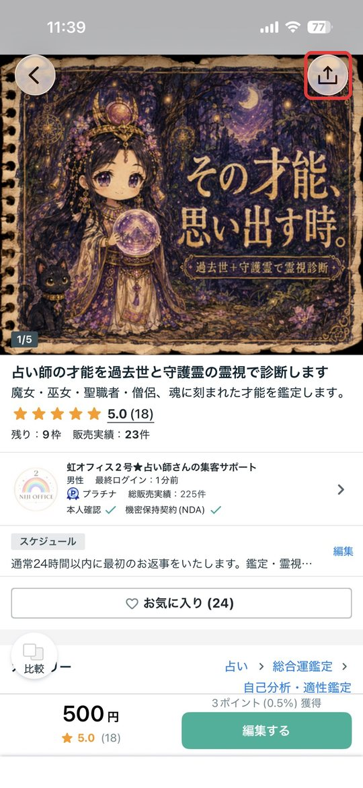
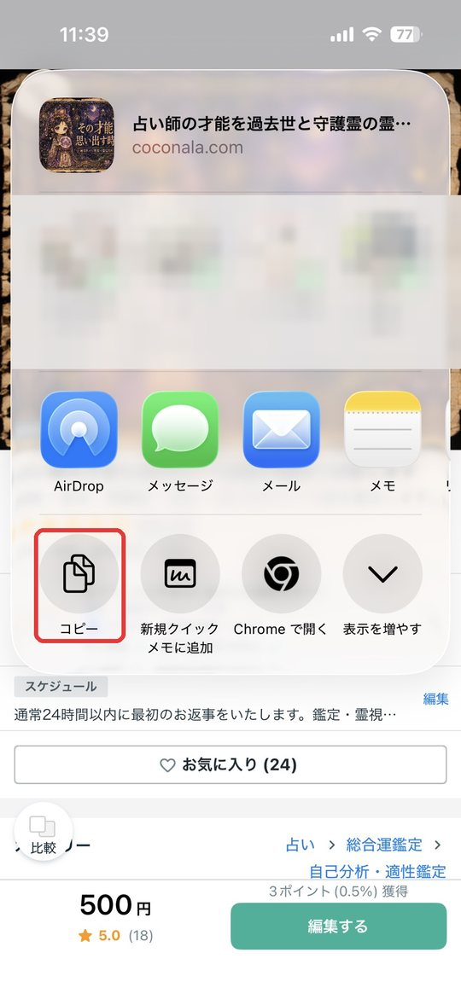
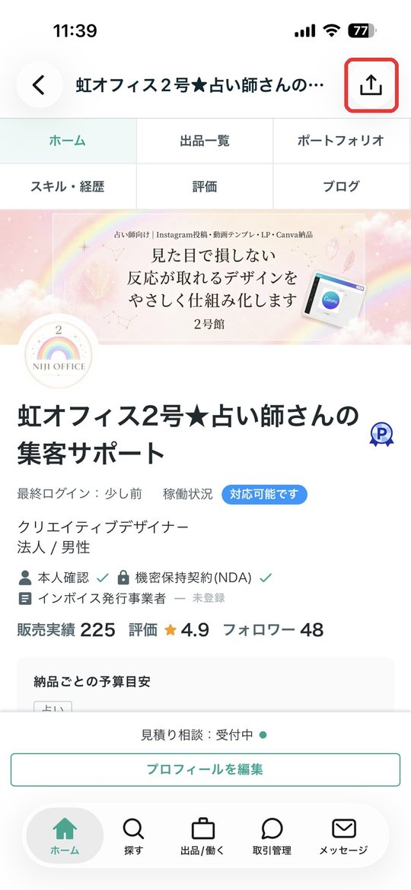
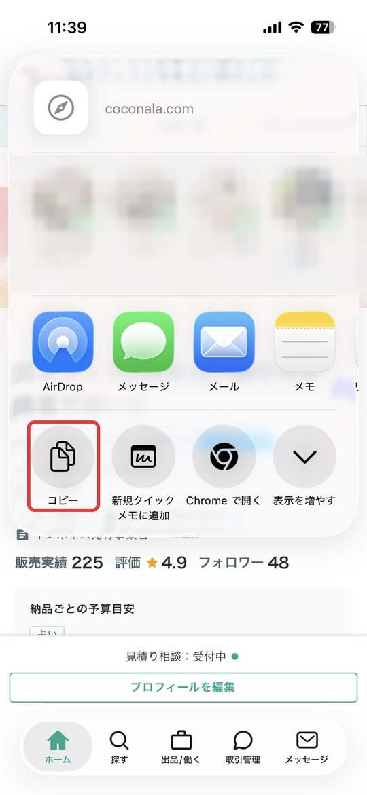

売れているお店を3〜5店調べて、「私のお店は○○な人のための○○」と一文で言えるようにする。
いちばん手が止まるのは「何を出品すればいいか分からない」ときです。すでに売れているお店の「型」を調べれば、ゼロから考える必要がなくなります。ここで決めた方向性が、STEP 3のプロフィールとSTEP 4の商品づくりの土台になります。
「モデリング」は真似とは違う
モデリングとは、売れている人の文章や画像をコピーすることではありません。「なぜ売れているのか」という型だけを取り出して、自分の言葉で組み立て直すことです。
文章や画像をそのままコピーする
規約違反・著作権の侵害になり、ほかの人と差もつきません
タイトルの付け方・価格帯・オプションの組み方など、型だけを取り出す
取り出した型を、自分の言葉で書き直して使います
参考にするお店を選ぶ
占いカテゴリのランキングから、次の基準で3〜5店を選びます。
- ランキングの上位〜中位：トップを独占している大手は、初心者には真似しにくいので避けます
- レビューが多い：実際に売れている証拠です
- 最近も更新されている：今も続けて運営されているお店です
- 自分が出したい価格帯に近い
- 「この人の商品ページ、読みやすい」と感じた：自分が目指したい雰囲気の人も1店入れましょう




画像を押すと大きく表示されます。横にスクロールできます。
選んだお店のプロフィールページか商品ページのURLを、メモしておきましょう（コピーのしかたは次で説明します）。
URLのコピーのしかた
このあと、参考にするお店のURLをChatGPTに渡します。スマホのアプリでは画面にURLが出ていないので、「共有」ボタンからコピーします。
商品ページのURL


プロフィールページのURL


iPhoneの画面です。Androidでも、共有ボタンを押して「コピー」や「リンクをコピー」を選べば同じです。
- コピーしたら：メモアプリに1行ずつ貼ってためておきます。このあとChatGPTに渡すときに、まとめてコピーできて便利です。
- パソコンの場合：ブラウザの一番上のアドレスバーをクリックして、出てきたURLをコピーします。
- うまく貼れたかの確認：商品ページは「https://coconala.com/services/」、プロフィールページは「https://coconala.com/users/」で始まっていればOKです。
売れているお店を調べる
- 参考にするお店ごとに、いちばん売れていそうな商品を1つ開く
- 下の「見るところ」5つをメモする
- 3〜5店分そろったら、2つを書き出す①どのお店にも共通していること（＝売れる型。まねしていいところ）
②どのお店も扱っていない悩みや切り口（＝すき間。あなたが入れる場所）
見るところ
- タイトル：どんな悩みの言葉が、前のほうに入っているか
- 価格：入口・ミドル・バックを、どんな価格で並べているか
- オプション：追加で何を選べるようにしているか
- 画像：1枚目に、何を大きく書いているか
- レビュー：お客様が、何をほめているか
「復縁専門／入口1,000円・ミドル3,000円／オプションで復縁の時期／1枚目は『もう一度会える？』／レビューは『寄り添ってくれた』が多い」
5店とも「復縁全般」の鑑定を出しているけれど、「音信不通になってから」に絞ったお店はひとつもない。
→ 「音信不通の彼の今の気持ち」に絞った商品なら、ライバルが少なく、その悩みの人に「私のための鑑定だ」と思ってもらえます。
「なぜ売れているのか」を深掘りする
型が分かったら、「なぜそれが選ばれているのか」まで言葉にしておきます。理由を自分で説明できるようになると、このあとの文章づくりがぐっと早くなります。
- メモを見ながら、お店ごとに「お客様が安心して頼めた理由」を考える例：「結果だけでなく、明日からできることまで書いてある」「お届けが早いと書いてある」「レビューで寄り添ってくれたと言われている」
- どのお店にも共通する理由を、3〜5つ書き出す
- その中から、自分のお店に取り入れたいことを3つ選ぶ
書き出した内容は、メモアプリやGoogleドキュメントに「ココナラ講座」のような分かりやすい名前で残しておきましょう。STEP 4の商品づくりでそのまま使います。
うまくいくコツ
- 探すのは「すき間」：売れている人の真似をするためではなく、どのお店もまだ扱っていない悩みや切り口（＝すき間）を見つけるために調べます。
- 価値観の欄に本音を書く：「なぜ占いをしているか」「どんな人を助けたいか」が、ほかの人との違いになります。
- お店の軸を決める：「恋愛」のように、お店の中心になるテーマを決めます。STEP 4で、その中の悩みごと・価格ごとに商品を並べていきます。
宿題
型：「私のお店は、＿＿＿＿で悩んでいる人のための、＿＿＿＿な鑑定です」
ここに書いた内容は、このブラウザの中だけに保存されます。